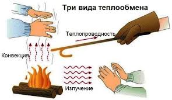

Необратимый процесс передачи теплоты от более нагретых тел к менее нагретым.
Существуют также различные виды сложного переноса тепла, которые являются сочетанием элементарных видов. Основные из них:
теплоотдача (конвективный теплообмен между потоками жидкости или газа и поверхностью твёрдого тела);
теплопередача (теплообмен от горячей среды (жидкость, газ или твердое тело) к холодной через разделяющую их стенку);
конвективно-лучистый перенос тепла (совместный перенос тепла излучением и конвекцией);

Воспринимаемые органами чувств человека нагрев или охлаждение макроскопического объекта есть проявления изменения внутренней энергии этого объекта. Обратное неверно: постоянство температуры объекта не означает неизменность его внутренней энергии (например, температура системы неизменна при фазовых переходах первого рода — плавлении, кипении и др.).